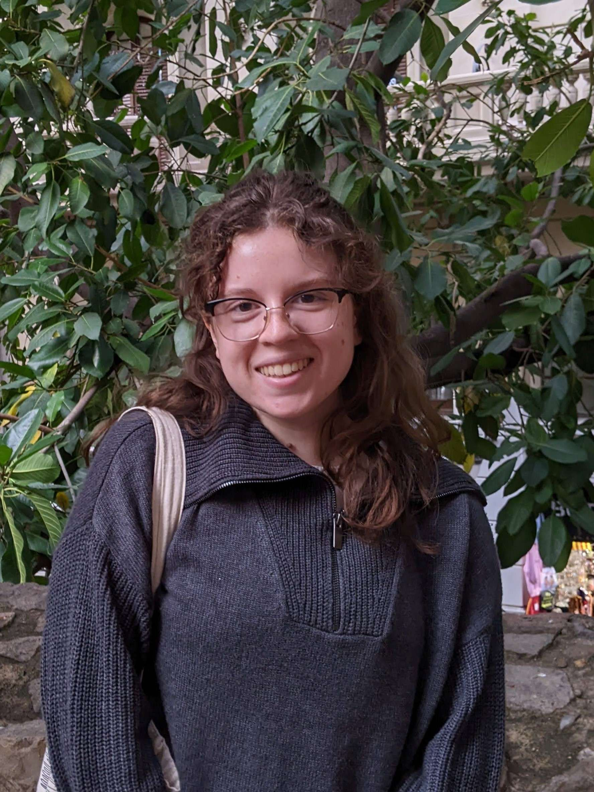

Hello!
Welcome to my website! My name is Isabella. As you navigate through these pages, I hope you'll gain a better understanding of my skills and passions through exhibitions of my work. But first, a little about me:
I'm currently a Technical Solutions Engineer at Epic. I work directly with healthcare organizations that utilize Epic's EHR software to support and improve their Epic implementations. This involves everything from meeting with analysts to debug
very technical issues to meeting with leadership to push continuous improvements that align with the organization's goals. I recently supported an FQHC with an overwhelmed call center in implementing Epic's integrated automatic calling system ("Hello World Voice"), which
has decreased call center volumes and wait times. I also supported an organization with a complex scheduling system in implementing Session Analytics, which will allow them to track a patient's scheduling attempts from pre-login workflows all the way to their eventual appointments, which
will allow more granular insights into scheduling issues at the organization.
Before Epic, I graduated Summa Cum Laude with dual degrees from Duke University and Duke Kunshan University. I have been passionate about the environment and sustainability for a long time, and pursued those interests via my major; Computation & Design with an Environmental Sustainability concentration.
My coursework gave me a breath of knowledge surrounding environmental policy and quantitative assessment methods. In my senior thesis by investigating the
environmental and social effects of historic redlining practices in the United States.
In my free time, I like to play tennis, go on bike rides, and journal. In addition, especially thanks to DKU's location, I've been able to develop a love for travelling and
exploring new places!
In my portfolio, you can find my senior thesis, projects I worked on as a Research Assistant to a professor of media studies at DKU, as well as course finals and personal projects.
See My Resume Here!